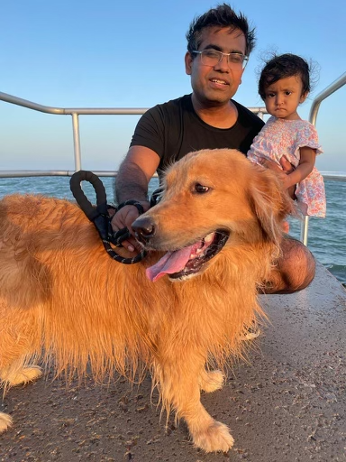

Tennis Data Science Summer Camp
- Learn to analyze tennis data like a pro
- Code with Python, JavaScript, using AI tools (vibe coding)
- Build your own data portfolio project
- Grades 9-12 | Tennis enthusiast | No coding experience needed
Meet Your Instructor

-
Founder & Data Executive
I run Orangemetrics, a data company, and Bitcoin Data Labs, a non-profit for open-source data tools. I've also served as a data executive in big tech.
-
Pioneering Sports Modeler
I co-created India's first Swingmeter in 2008, providing live win/loss probabilities for cricket. It was an early dive into real-time sports data.
-
Impactful Data Products
Over a 20-year career, I've built critical mortgage and auto loan models, creating data products used by nearly all Americans. Now, I'm channeling that expertise into tennis analytics.
What You'll Learn
- Python & JavaScript programming
- AI-assisted coding techniques
- Statistical analysis (mean, correlation, t-tests)
- Hypothesis generation, validation and visual Storytelling
- Build & deploy your data web app
Schedule
- 8 Sessions (2/week initially, then 1/week)
- 1.5 to 2 hours per session
- Live online (Google Meet/Discord)
- Final Project Presentation & Showcase
Pricing
$699 per student
- Live Instruction + Q&A
- Discord channel support
- Peer group and Mentorship
8-Week Learning Journey
Week 1-2
Foundations & First Project
- Python basics in Google Colab
- Explore tennis data, Match charting Project Link
- Mini-Project 1: Analyze basic player stats and visualize initial insight
- Intro to AI assisted data analysis and viualization
Week 3-4
Project Planning & Core Analysis
- Define your main project: Formulate hypotheses and key metrics.
- Essential statistics for sports data (e.g., distributions, correlations).
- Project Work: Apply core analytics and visualizations to your chosen project.
- Data cleaning and preparation strategies.
Week 5-6
Advanced Techniques & Interactive Building
- Deep dive into your project
- Leverage AI tools for complex data insights and code generation.
- Build interactive dashboards or web apps for your project.
- **Project Milestone:** Develop a functional prototype or key interactive component.
Week 7-8
Project Refinement & Showcase
- Dedicated project development:Polish your individual tennis analytics project.
- One-on-one mentoring for code, analysis, and presentation.
- Craft a compelling visual story around your project's insights.
- Final Project Presentation: Showcase your work and build your portfolio.